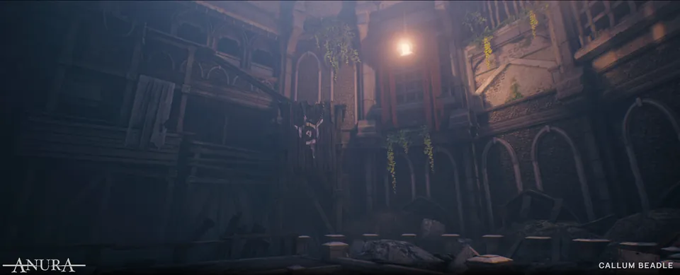
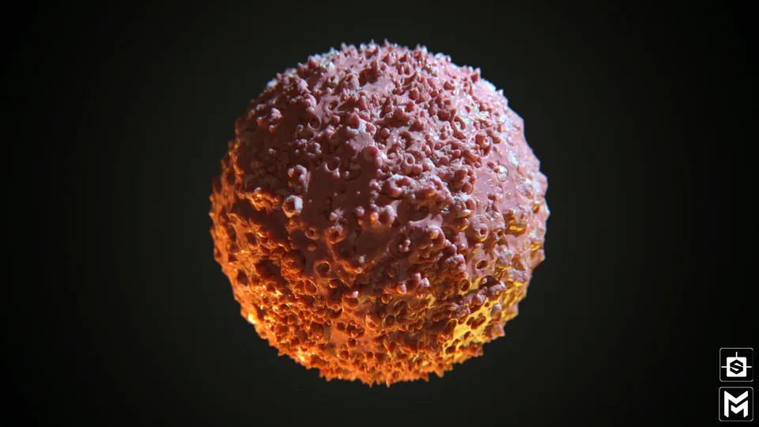

Callum Beadle (Żochowski)
Environment Artist
About me
Currently at SludgePipeGames, the indie studio behind Sparedevil, where I look after head and quality control the level environment art.
Before that I worked at Digital Salmon on real-time projects, from a stylised internal game to a UE5 vehicle experience for Ford™, where I first led a modelling team and helped build its pipeline.
My work runs from whole playable levels down to the tileable materials inside them, and I enjoy building kits that let a team move fast without losing a consistent style.
Experience
- SludgePipeGamesPresentLead Environment Artist
- Digital SalmonFrom 2021Environment Artist. Art direction on Darkest Fayte, modelling team lead on Ford Explorer™
- Freelance2019–2020Materials for student projects
- University of HertfordshireAnura and OMEN university projects

Environments
Materials- Unreal Engine
- Unity
- Maya
- Blender
- Houdini
- ZBrush
- Substance 3D Designer
- Substance 3D Painter
- Photoshop